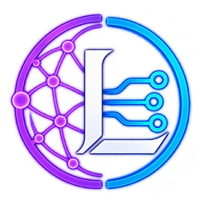

Relais Nostr Map
wss://relay.nostrmap.net

Libestria est un portail francophone consacré à Nostr et SimpleX, deux écosystèmes de communication décentralisés qui favorisent la liberté numérique, l’autonomie et le respect de la vie privée.
Son ambition est de réunir en un même espace des ressources, des services et des initiatives communautaires pour faciliter la découverte et l’utilisation de ces technologies.
Libestria propose une sélection de relais Nostr et de serveurs SimpleX publics francophones, ainsi que des groupes de discussion pour échanger, s’entraider et partager des expériences au sein de la communauté.
Le site met également en valeur des projets indépendants, des outils et des services développés ou maintenus par des membres de la communauté francophone, contribuant ainsi à leur visibilité et à leur découverte.
Des guides pratiques et des ressources dédiés à Nostr et SimpleX viendront progressivement enrichir le portail, afin d’accompagner les utilisateurs dans leur prise en main et leur utilisation au quotidien.
Libestria propose aussi un service d’identité NIP-05 personnalisée sous le domaine libestria.fr, permettant d’associer un profil Nostr à une adresse simple à reconnaître et à partager.
Indépendant, accessible et convivial, Libestria souhaite encourager le partage de connaissances, l’entraide et les initiatives francophones, tout en contribuant à un écosystème numérique plus libre, ouvert et décentralisé.
Nostr est un protocole ouvert et décentralisé qui permet de communiquer, publier et partager des contenus sur Internet, sans dépendre d’une plateforme comme Facebook, X ou Instagram.
Contrairement aux réseaux sociaux traditionnels, Nostr n’appartient à aucune entreprise. Il fonctionne grâce à des serveurs indépendants, appelés relais, qui transmettent les messages entre différentes applications.
Sa particularité ? Ton identité numérique t’appartient ! Grâce à un système de clés cryptographiques, tu peux changer d’application sans perdre ton identité ni tes contacts. Tu conserves ainsi davantage de liberté et de contrôle sur ton expérience.
Avec Nostr, tu peux publier des messages, partager des articles, des photos ou des vidéos, échanger avec d’autres utilisateurs et même soutenir des créateurs grâce à des micropaiements en bitcoin, appelés Zaps. Et pas besoin de posséder du bitcoin pour profiter du réseau !
Nostr propose ainsi une autre vision des réseaux sociaux : plus ouverte, plus libre et moins dépendante des grandes plateformes. Tu choisis tes applications, tes communautés et ta façon de communiquer.
Envie de découvrir Nostr et de faire tes premiers pas ? Libestria t’accompagne dans cette découverte avec des guides et des ressources pour comprendre le réseau, choisir tes applications et commencer à l’utiliser à ton rythme.
Sur Nostr, ton identité repose sur une clé publique, appelée npub. Cette longue suite de caractères permet aux autres utilisateurs de retrouver ton profil, mais elle n’est pas toujours facile à mémoriser ou à partager.
Le NIP-05 permet d’associer cette clé publique à un identifiant plus simple, qui ressemble à une adresse e-mail. Cet identifiant facilite la reconnaissance de ton profil et permet aux applications Nostr compatibles de vérifier son association avec un nom de domaine.
Avec Libestria, tu peux obtenir ton propre identifiant NIP-05 personnalisé, au format pseudo@libestria.fr.
Attention, un identifiant NIP-05 n’est pas une adresse e-mail : il ne permet pas d’envoyer ou de recevoir des courriels. Il ne remplace pas non plus ta clé publique Nostr, mais constitue un moyen plus pratique de présenter ton identité sur le réseau.
Comment obtenir ton identifiant ?
Il te suffit de contacter Libestria en précisant :
Ton pseudo doit contenir uniquement des lettres minuscules (a-z), des chiffres (0-9), des tirets (-), des traits de soulignement (_) et des points (.).
Nostr est un protocole de communication ouvert et décentralisé, qui fonctionne sans serveur central imposé. Les publications sont transmises et stockées par des serveurs indépendants appelés relais.
Se connecter à plusieurs relais permet de mieux diffuser ses publications, de retrouver plus facilement les contenus des personnes suivies et de limiter sa dépendance à un seul serveur.
Libestria te propose une sélection de relais Nostr publics, gratuits, accessibles à tous sans inscription, et gérés par des membres de la communauté francophone #nostrfr.
Pour les utiliser, il te suffit de copier leurs adresses et de les ajouter dans les paramètres de gestion des relais de ton application/client Nostr.
Retrouve dans cette rubrique les guides pratiques de Libestria consacrés à Nostr. Que tu découvres le protocole ou que tu l’utilises déjà, ces tutoriels en français te permettent d’explorer ses différentes possibilités et d’aller plus loin dans sa configuration.
De la gestion de ton identité Nostr à la personnalisation de tes outils, chaque guide aborde un sujet précis avec des explications détaillées et des étapes à suivre. L’objectif est de t’aider à comprendre ce que tu fais, à effectuer tes propres réglages et à profiter pleinement de Nostr, tout en gardant la maîtrise de ton identité et de tes données.
Comprends les spécifications qui permettent aux clients, aux relais et aux autres outils Nostr de fonctionner ensemble.
Apprends à choisir et organiser tes relais de lecture, d’écriture, de recherche et de messages privés.
Découvre le rôle d’un signer (signataire) Nostr et apprends à l’utiliser pour protéger ta clé privée et te connecter à différentes applications en toute sécurité.
Associe ta clé publique Nostr à une adresse lisible en hébergeant toi-même le fichier de correspondance.
D’autres guides à venir prochainement.
Libestria te propose une sélection de ressources pour découvrir l’écosystème Nostr, explorer ses possibilités et trouver les outils adaptés à tes besoins.
Tu y trouveras des clients pour publier et échanger sur Nostr, des signers pour sécuriser tes connexions, des outils pour découvrir et gérer les relais, ainsi que des portefeuilles Lightning pour envoyer et recevoir des paiements.
Cette sélection rassemble également des outils pratiques et des services utilisant Nostr dans différents domaines, comme la musique, la vidéo, le commerce ou les échanges entre particuliers.
Que tu découvres Nostr ou que tu l’utilises déjà, ces ressources te permettront d’explorer de nouvelles fonctionnalités et d’enrichir ton expérience au sein de cet écosystème décentralisé.
Clients Nostr
Découvre les applications qui permettent de publier, d’échanger et d’interagir avec d’autres utilisateurs sur le réseau Nostr.
Client Nostr intégrant un portefeuille Lightning, la découverte de contenus et les interactions sociales.
Compatibilité : Web · Android · iOS
Client Nostr polyvalent proposant des fonctionnalités avancées et de nombreuses options de personnalisation.
Compatibilité : Android · Linux · Windows · macOS
Client Nostr privilégiant la simplicité d’utilisation pour publier, échanger et suivre ses contacts.
Compatibilité : iOS · iPadOS · macOS
Client Nostr permettant de publier des contenus, d’interagir avec sa communauté et d’effectuer des paiements Lightning.
Compatibilité : Web · Android · iOS · iPadOS · macOS
Client Nostr réunissant échanges sociaux, découverte de contenus et fonctionnalités Bitcoin.
Compatibilité : Web · Android · iOS · iPadOS · macOS
Client Nostr proposant une interface moderne pour publier des notes, échanger et suivre ses contacts.
Compatibilité : Web
Client Nostr avancé permettant d’explorer les fonctionnalités du protocole et de personnaliser son expérience.
Compatibilité : Web
Client Nostr proposant des fonctionnalités avancées et une interface personnalisable pour les appareils Apple.
Compatibilité : iOS · iPadOS · macOS
Client Nostr facilitant la découverte de contenus, de personnes et de communautés.
Compatibilité : Web
Client Nostr permettant d’envoyer des zaps en Monero (XMR), comme alternative aux paiements Lightning.
Compatibilité : Android
Signers (signataires) Nostr
Protège ta clé privée et connecte-toi aux applications Nostr sans avoir à la saisir directement.
Signer Nostr permettant de protéger ses clés privées et d’autoriser des signatures locales ou distantes.
Type : Application · NIP-55 · NIP-46
Compatibilité : Android
Signer Nostr permettant de gérer ses identités et d’autoriser les signatures depuis un navigateur.
Type : Extension de navigateur · NIP-07
Compatibilité : Chrome · Firefox · Brave · Edge · Opera
Signer Nostr permettant de gérer plusieurs identités et d’autoriser les signatures à distance.
Type : Application Web · NIP-46
Compatibilité : Web
Signer Nostr permettant de conserver ses clés privées sur iPhone et d’autoriser les signatures à distance.
Type : Application · NIP-46
Compatibilité : iOS
Signer Nostr permettant de protéger ses clés privées, de signer des événements et de connecter un portefeuille Lightning.
Type : Extension de navigateur · NIP-07
Compatibilité : Chrome · Firefox · Brave · Edge · Opera
Relais Nostr
Découvre les relais Nostr disponibles et trouve ceux qui correspondent à tes besoins.
Outil Nostr permettant de découvrir des relais et de consulter leur disponibilité ainsi que leurs caractéristiques.
Outil Nostr proposant une carte interactive des relais pour faciliter leur découverte et leur exploration.
Outil Nostr permettant de surveiller la disponibilité des relais et de consulter leurs statistiques de fonctionnement.
Service Nostr permettant de créer, d’héberger et de configurer des relais personnels ou communautaires.
Wallets (portefeuilles) Lightning
Découvre des portefeuilles qui permettent d’envoyer et de recevoir des zaps (paiements en bitcoin via Lightning) sur Nostr.
Portefeuille Lightning intégré à Primal permettant d’envoyer et de recevoir des paiements depuis le client Nostr.
Garde : Non-custodial
NWC : Oui · NIP-47
Compatibilité : Android · iOS
Interface Lightning de YakiHonne permettant de connecter un portefeuille externe via Nostr Wallet Connect.
Garde : Selon le wallet connecté
NWC : Oui · connexion NWC
Compatibilité : Web · Android · iOS · iPadOS
Portefeuille Lightning intégré à Nostrich permettant de gérer ses fonds et d’effectuer des paiements depuis le client Nostr.
Garde : Non-custodial
NWC : Connexion NWC externe
Compatibilité : Web · Android · iOS
Portefeuille Lightning en autogarde permettant de gérer ses fonds et de connecter des applications via NWC.
Garde : Non-custodial
NWC : Oui · NIP-47
Compatibilité : Web · Auto-hébergement
Service Lightning permettant de gérer des paiements et de connecter des applications Nostr via NWC.
Garde : Custodial (offre hébergée)
NWC : Oui · NIP-47
Compatibilité : Web
Portefeuille Bitcoin et Lightning permettant d’effectuer des paiements et de connecter des applications via NWC.
Garde : Custodial (service hébergé)
NWC : Oui · NIP-47
Compatibilité : Web
Portefeuille Lightning permettant d’envoyer et de recevoir des paiements Bitcoin depuis une application mobile.
Garde : Custodial ou non-custodial selon le mode
NWC : Non
Compatibilité : Android · iOS
Portefeuille Lightning permettant de gérer ses fonds et de connecter des applications Nostr via NWC.
Garde : Selon le portefeuille ou nœud utilisé
NWC : Oui · NIP-47
Compatibilité : Android · iOS
Plateforme Lightning permettant de créer des portefeuilles et de connecter des applications Nostr grâce à une extension NWC.
Garde : Selon l’instance
NWC : Oui · via extension
Compatibilité : Web · Auto-hébergement
Outils Nostr
Retrouve des outils pratiques pour rechercher des contenus, gérer ton profil et explorer les différentes fonctionnalités de Nostr.
Moteur de recherche Nostr permettant de retrouver des contenus grâce à des filtres et des requêtes avancées.
Compatibilité : Web · Android
Passerelle Nostr permettant de consulter et de partager des profils, des notes et des événements depuis un navigateur.
Compatibilité : Web
Tableau de bord Nostr permettant de consulter les statistiques d’activité du réseau et de ses utilisateurs.
Compatibilité : Web
Outil Nostr permettant de gérer les informations de son profil, ses contacts et ses relais, avec des fonctions de sauvegarde et de restauration.
Compatibilité : Web
Outil Nostr permettant de convertir les clés publiques entre les formats npub et hexadécimal.
Compatibilité : Web
Outil Nostr permettant de créer, d’attribuer et de gérer des badges numériques associés aux profils.
Compatibilité : Web
Outil Nostr permettant de créer et de partager des formulaires pour recueillir des réponses de manière décentralisée.
Compatibilité : Web
Outil Nostr permettant de sauvegarder, d’exporter et de restaurer sa liste de contacts.
Compatibilité : Web
Outil Nostr permettant de migrer son profil, ses contacts et ses relais vers une nouvelle identité.
Compatibilité : Web
Boîte à outils permettant de décoder, encoder et analyser des données Nostr. Destinée aux utilisateurs avancés.
Compatibilité : Web
Services Nostr
Explore les services utilisant Nostr pour la musique, la vidéo, le commerce, les échanges entre particuliers et bien d’autres usages.
Plateforme musicale intégrant Nostr pour découvrir des artistes, écouter leurs créations et les soutenir grâce aux paiements Lightning.
Compatibilité : Web · Android · iOS
Plateforme de podcasts et de musique intégrant Nostr pour découvrir des contenus, interagir avec les créateurs et les soutenir grâce aux paiements Lightning.
Compatibilité : Web · Android · iOS
Plateforme de streaming en direct utilisant Nostr pour diffuser des vidéos, échanger avec les spectateurs et recevoir des zaps Lightning.
Compatibilité : Web · Android · iOS
Plateforme de streaming en direct utilisant Nostr pour regarder des vidéos, participer aux discussions et soutenir les créateurs grâce aux zaps Lightning.
Compatibilité : Web
Marketplace décentralisée utilisant Nostr pour publier des annonces, acheter et vendre des produits avec des paiements Lightning ou Cashu.
Compatibilité : Web
Marketplace décentralisée utilisant Nostr pour créer des boutiques, proposer des produits et effectuer des achats en Bitcoin.
Compatibilité : Web
Protocole d’échange Bitcoin P2P utilisant Nostr et Lightning pour mettre en relation acheteurs et vendeurs sans vérification d’identité.
Compatibilité : Selon le client utilisé
Protocole d’échange décentralisé utilisant Nostr pour découvrir des offres et réaliser des swaps atomiques sans tiers de confiance.
Compatibilité : À confirmer
Application de suivi sportif intégrant Nostr pour découvrir et partager des programmes d’entraînement tout en gardant le contrôle de ses données.
Compatibilité : Web · Application installable
SimpleX Chat est une messagerie privée, sécurisée et décentralisée qui permet de communiquer et de partager des contenus tout en protégeant ta vie privée, sans dépendre d’une plateforme centralisée.
Contrairement aux messageries traditionnelles comme WhatsApp, Telegram ou Signal, SimpleX ne nécessite ni numéro de téléphone, ni adresse e-mail, ni identifiant utilisateur. Il fonctionne grâce à des serveurs indépendants qui transmettent les messages chiffrés sans avoir accès à leur contenu.
Sa particularité ? Ta vie privée passe avant tout ! Grâce au chiffrement de bout en bout et à l’absence d’identifiant global, SimpleX protège tes conversations tout en limitant les informations permettant de savoir avec qui tu communiques. Tu conserves ainsi davantage de confidentialité et de contrôle sur tes échanges.
Avec SimpleX Chat, tu peux envoyer des messages, partager des photos, des vidéos ou des fichiers, passer des appels audio et vidéo et participer à des conversations de groupe. Le tout de manière chiffrée, sans avoir besoin de communiquer tes coordonnées personnelles !
SimpleX propose ainsi une autre vision de la messagerie : plus confidentielle, plus libre et plus respectueuse de ta vie privée. Tu choisis tes contacts, tes moyens de communication et les informations que tu souhaites partager.
Envie de découvrir SimpleX Chat et de te lancer ? Retrouve les guides et ressources proposés par Libestria pour comprendre son fonctionnement, installer l’application et faire tes premiers pas en toute simplicité.
SimpleX est un protocole de messagerie décentralisé conçu pour protéger la vie privée, sans identifiant utilisateur permanent. Il s’appuie sur des serveurs indépendants qui transmettent les messages chiffrés sans pouvoir en lire le contenu.
Il existe deux types de serveurs : les serveurs SMP, qui assurent la transmission des messages, et les serveurs XFTP, qui permettent le transfert de fichiers et de médias.
Utiliser plusieurs serveurs permet de limiter ta dépendance à un seul opérateur, d’améliorer la disponibilité du service et de renforcer la confidentialité de tes échanges.
Libestria te propose une sélection de serveurs SimpleX publics, gratuits et accessibles à tous, hébergés et maintenus par des membres de la communauté francophone #nostrfr.
Pour les utiliser, il te suffit de copier leurs adresses ou de scanner leurs QR codes directement dans les paramètres de gestion des serveurs de ton application SimpleX.
Retrouve dans cette rubrique les guides pratiques de Libestria consacrés à SimpleX Chat. Que tu découvres cette messagerie ou que tu l’utilises déjà, ces tutoriels en français te permettent d’explorer ses différentes fonctionnalités et d’aller plus loin dans sa configuration.
De la sauvegarde de tes conversations à la gestion de tes contacts et de tes paramètres de confidentialité, chaque guide aborde un sujet précis avec des explications détaillées et des étapes à suivre. L’objectif est de t’aider à comprendre ce que tu fais, à personnaliser ton utilisation de SimpleX Chat et à préserver tes échanges, tout en gardant la maîtrise de tes communications et de tes données.
Un guide clair pour exporter, protéger et restaurer tes conversations.
D’autres guides à venir prochainement.
Libestria te propose une sélection de ressources pour découvrir SimpleX Chat, installer l’application et explorer ses fonctionnalités.
Tu y trouveras des guides pratiques et de la documentation officielle pour prendre en main SimpleX Chat, un annuaire pour découvrir des communautés, ainsi que des ressources pour suivre les actualités et le développement du projet.
Cette sélection rassemble également des guides techniques pour héberger tes propres serveurs et approfondir ta connaissance du réseau SimpleX.
Que tu découvres SimpleX Chat ou que tu l’utilises déjà, ces ressources t’aideront à profiter pleinement de cette messagerie décentralisée, tout en préservant ta vie privée.
Les ressources sont identifiées par leur langue : (FR) pour le français et (EN) pour l’anglais.
Site officiel de SimpleX Chat, une messagerie décentralisée et chiffrée de bout en bout, sans numéro de téléphone ni adresse e-mail. Présentation et téléchargement de l’application pour Android, iOS, Windows, macOS et Linux.
Guide indépendant et illustré de 16 pages pour installer, utiliser et sécuriser SimpleX Chat. Il aborde les contacts, les groupes, la confidentialité, les serveurs et les sauvegardes, avec des captures d’écran sur iPhone.
Guide officiel de prise en main de SimpleX Chat : installation, premiers contacts, échanges de messages et participation aux groupes d’utilisateurs.
Annuaire de groupes et de communautés SimpleX permettant de rechercher des espaces de discussion et de les rejoindre depuis l’application.
Page de documentation en français donnant accès au groupe d’utilisateurs #SimpleX-FR, pour échanger, poser des questions et partager des conseils.
Blog officiel consacré aux nouvelles versions, aux fonctionnalités, à la sécurité et aux évolutions du projet SimpleX.
Dépôt GitHub officiel donnant accès au code source de SimpleX Chat, aux versions publiées et au suivi du développement.
Documentation technique en français pour installer et configurer un serveur SMP, chargé de relayer les messages sur le réseau SimpleX.
Documentation technique officielle pour installer et configurer un serveur XFTP, destiné au transfert de fichiers sur le réseau SimpleX.
Les groupes de discussion présentés sur Libestria sont des espaces francophones dédiés aux échanges, à la découverte et au partage autour de centres d’intérêt communs.
Créés et animés par des membres de la communauté #nostrfr, ils accueillent aussi bien les débutants que les utilisateurs expérimentés, dans une ambiance conviviale et bienveillante.
Tu peux y poser tes questions, partager tes expériences, approfondir tes connaissances ou simplement rencontrer d’autres utilisateurs. L’entraide et le partage sont au cœur de ces communautés.
Pour participer, il te suffit de choisir le groupe qui t’intéresse et de le rejoindre grâce au lien d’invitation proposé.
Groupes SimpleX
Des groupes de discussion francophones sur SimpleX, pour échanger en toute confidentialité, poser tes questions et partager tes connaissances.
Un groupe SimpleX francophone pour découvrir, apprendre et échanger autour de Nostr et de SimpleX. Un point de rencontre entre deux communautés.
Un groupe SimpleX francophone pour découvrir, apprendre et échanger autour de Bitcoin.
Groupes Nostr (Armada)
Des groupes de discussion francophones sur Armada (application de discussion de groupe construite sur Nostr) pour échanger, poser tes questions et partager tes connaissances.
Un groupe Armada convivial pour discuter de tout entre francophones : actualité, passions, questions du quotidien, discussions libres.
Un groupe Armada francophone pour découvrir, apprendre et échanger autour du protocole Nostr.
Un groupe Armada francophone pour découvrir, apprendre et échanger autour de la messagerie SimpleX Chat.
La communauté francophone compte d’autres initiatives qui contribuent à faire vivre et à développer un numérique plus libre, ouvert et décentralisé.
Libestria met en lumière des projets indépendants portés par des membres de la communauté #nostrfr, autour de Nostr, de la décentralisation et de la protection de la vie privée.
Annuaires, outils, services et ressources pratiques : ces projets permettent de découvrir de nouvelles solutions, d’approfondir ses connaissances et de gagner en autonomie numérique.
Pour les découvrir, il te suffit de consulter les présentations et de suivre les liens proposés.
Nostr Map propose un annuaire de la communauté Nostr francophone #nostrfr et une extension de navigateur (« signer ») pour sécuriser ses connexions.
Decentralia Apps est un annuaire d’applications et de protocoles libres et décentralisés, accompagné de guides pratiques pour protéger sa vie privée et reprendre le contrôle de ses données numériques.
Nœud Libre met à disposition un relais Nostr public et un serveur SimpleX pour favoriser des communications libres, décentralisées et respectueuses de la vie privée.
Toolstr est une plateforme d’outils et d’utilitaires dédiés à l’écosystème Nostr, conçue pour faciliter l’utilisation et l’exploration du protocole.
Une question, une suggestion ou une demande d’identifiant NIP-05 ? Tu peux contacter l’administrateur de Libestria par e-mail, par message privé Nostr (DM) ou via SimpleX.
Choisis ton moyen de contact préféré ci-dessous.
Tu peux soutenir Libestria avec un don libre en Bitcoin via Lightning ou en Monero (XMR), selon ta préférence.
Chaque contribution, quel que soit son montant, aide le projet à continuer à évoluer.
Merci d’avance pour ton soutien !
Libestria.fr est un portail indépendant et non commercial, édité à titre personnel et non professionnel depuis la France.
Hébergement : GitHub Pages — GitHub, Inc., 88 Colin P. Kelly Jr. Street, San Francisco, CA 94107, États-Unis.
Contact : rubrique Contacter Libestria.
Le site ne nécessite aucune inscription et n’utilise aucun outil de suivi statistique propre.
GitHub et Cloudflare peuvent traiter des données techniques de connexion, notamment les adresses IP, pour assurer le fonctionnement et la sécurité du site.
Le service NIP-05 publie l’identifiant que tu as choisi, associé à ta clé publique Nostr. Ces données sont utilisées uniquement pour fournir le service sollicité.
Pour exercer tes droits concernant tes données personnelles (accès, rectification, effacement, opposition, etc.), utilise la rubrique Contacter Libestria. Tu peux également adresser une réclamation à la CNIL (www.cnil.fr).
Les relais Nostr, serveurs SimpleX et autres services référencés sur Libestria restent sous la responsabilité de leurs opérateurs respectifs.